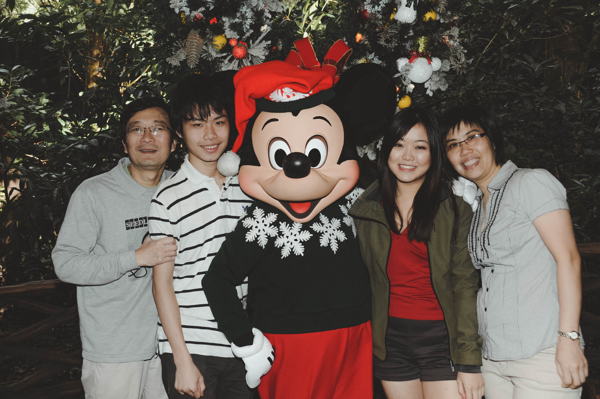
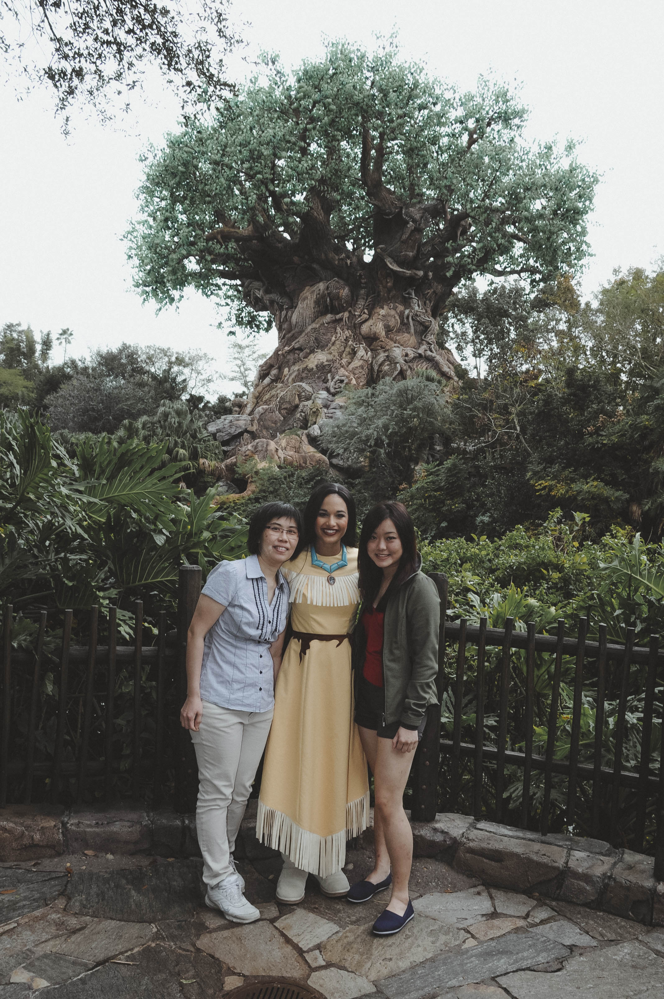
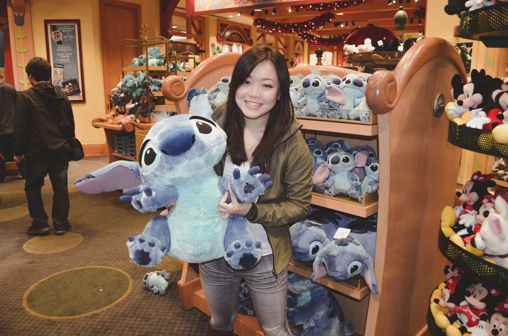
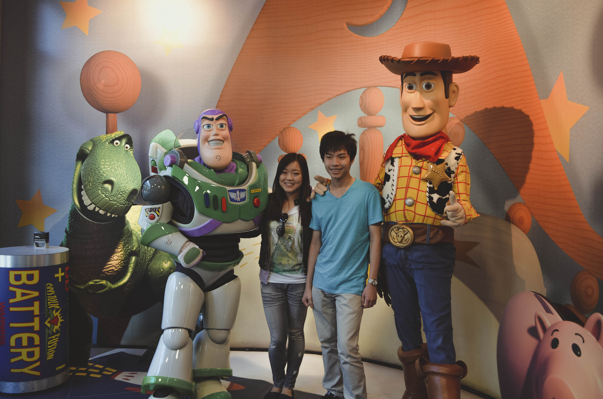
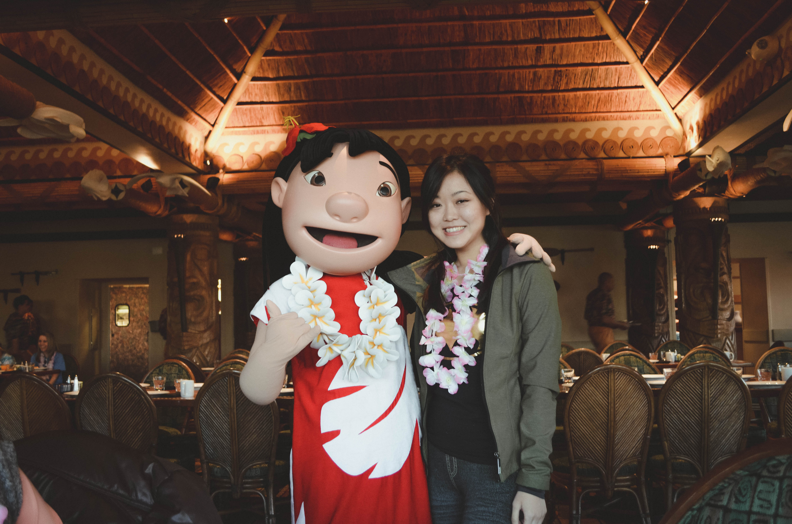
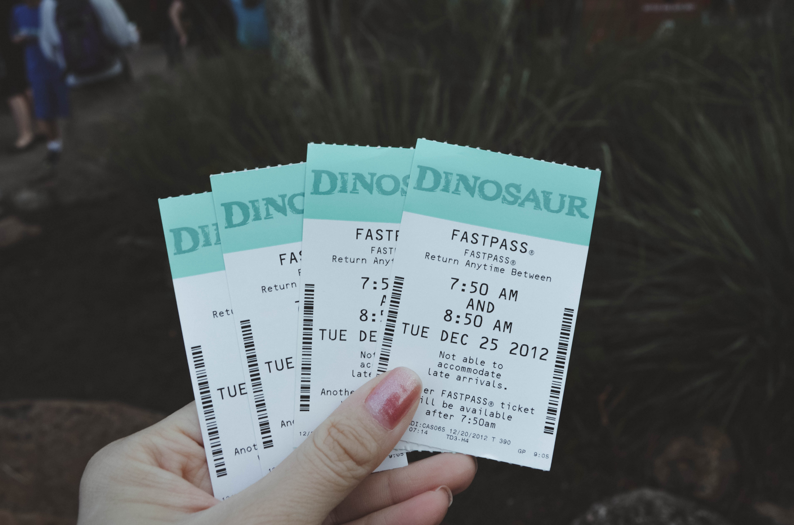
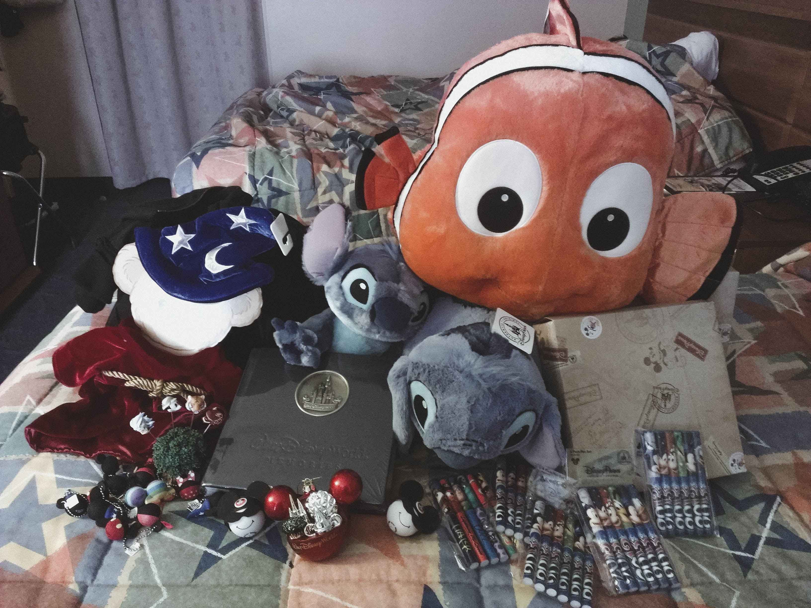

Karebear'sden

Disneyworld 2012
December 2012
My first time at Disneyworld was not as a child, but as a 21 year old celebrating Christmas with her family.
From the moment I walked into the gates of Disneyworld, I felt myself enter another realm. Music was playing everywhere, cheerful colours all around, endless smiles and laughter surrounded me from the moment the day started until the moment we left at night.
Disneyworld is said to be the happiest place on earth, and for good reason. It was one of the best family vacations we had all been on, and I look forward to our next one.







